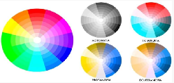

Governo DigitalPrefeitura da Cidade do Rio de Janeiro • Subsecretaria de Transformação Digital e Cidades Inteligentes
Guia de Boas Práticas de Acessibilidade Digital
Diretrizes, critérios técnicos e orientações práticas para a construção e adequação de portais públicos acessíveis, autônomos e inclusivos a todos os cidadãos cariocas.
Ctrl + K
Sugestões Encontradas0
Capítulo 1
Introdução
Em meio a um cenário de avanços tecnológicos e de transformação digital, torna-se urgente a preocupação e o compromisso da gestão pública com a inclusão digital de todos os cidadãos. Sem essa inclusão, a transformação digital torna-se mais uma barreira do que um facilitador. Por outro lado, uma transformação digital focada no ser humano usa a tecnologia para criar uma sociedade mais igualitária, garantindo acesso a serviços essenciais, diminuindo a burocracia, aumentando a eficiência, a transparência e a cidadania ativa.
A implementação da acessibilidade digital promove o acesso igualitário aos conteúdos e serviços públicos, garantindo que os usuários possam navegar com autonomia e compreender com facilidade seu conteúdo. Embora o foco deste guia seja garantir o acesso de pessoas com diversos tipos de deficiência, essa inclusão acaba sendo benéfica para toda a sociedade, pois também impacta outros grupos com baixa adaptação digital, como pessoas idosas ou com baixo nível de escolaridade, por exemplo.
A melhoria da acessibilidade e da usabilidade de portais não impacta negativamente quem não necessita delas, mas representa uma enorme diferença para todos aqueles que, muitas vezes, se vêem impossibilitados de acessar serviços apenas pelo fato de estarem em formato digital.
Compromisso com a População Carioca
Visando estabelecer esse compromisso com a população carioca, a Prefeitura da Cidade do Rio de Janeiro, a partir do trabalho da Subsecretaria de Transformação Digital e Cidades Inteligentes, cria o Guia de Boas Práticas de Acessibilidade Digital, que tem como objetivo unir transformação digital e inclusão, trazendo um compilado de diretrizes, critérios práticos e tutoriais que visam orientar Secretarias e demais Órgãos municipais a adequarem seus portais destinados aos cidadãos.
Reconhecemos as dificuldades intrínsecas à empreitada, mas reforçamos que mudanças dependem de engajamento e proatividade, mesmo que ocorram de forma gradual. Olhar para acessibilidade e usabilidade de nossos portais é também enxergar que todo e qualquer cidadão carioca precisa ter seus direitos assegurados e isso precisa ser prioridade para a gestão pública.
Capítulo 2
Compreendendo a Acessibilidade
Pessoas com Deficiência: definição
Segundo o Ministério da Saúde brasileiro, “pessoas com deficiência são aquelas que têm impedimento de médio ou longo prazo de natureza física, mental, intelectual ou sensorial, o que, em interação com uma ou mais barreiras, pode obstruir sua participação plena e efetiva na sociedade em igualdade de condições com as demais pessoas”[1].
O Modelo Social da Deficiência
A deficiência não é somente um atributo de cunho físico-biológico, mas sim o resultado da interação entre as limitações da pessoa e as barreiras do meio onde ela se encontra. Podemos encontrar essas barreiras na arquitetura, nos transportes, nas comunicações, na informação, na tecnologia, além das barreiras atitudinais (preconceitos). Com acessibilidade e inclusão, as limitações da pessoa passam a ser apenas uma característica e não um motivo de exclusão.
Tipos de Deficiência
No que se refere à origem da deficiência, o Ministério da Saúde reconhece que ela pode ser congênita (quando a pessoa já nasce com a deficiência) ou adquirida (quando a pessoa passa a ter a deficiência a partir de algum momento da vida, por motivos como doença ou acidente, por exemplo). Ela também pode ser permanente ou temporária, no que diz respeito à duração.
Oficialmente, o Brasil reconhece como tipos de deficiência: a física, visual, auditiva, intelectual e múltiplas (quando a pessoa tem mais de um tipo de deficiência). Ainda assim, o nosso Sistema Único de Saúde também trata como tal, as deficiências invisíveis ou ocultas[2], como: fibromialgia, lúpus, esclerose múltipla, endometriose, osteoporose, enxaqueca, surdez, baixa visão, doença de Alzheimer, dificuldades de aprendizado, esquizofrenia, TEA (transtorno do espectro autista), TDAH (transtorno de déficit de atenção e hiperatividade), depressão, TAB (transtorno afetivo bipolar), TAG (transtorno de ansiedade generalizada) e diversas outras.
Estatísticas: Censo 2010 vs 2022 e o Cenário Carioca
Além dos parâmetros do Ministério da Saúde, existem também os adotados pelo IBGE para realizar o Censo, que é a nossa principal forma de verificar os índices de pessoas com deficiência em todo o território nacional. Mas até mesmo dentro do próprio aferimento do IBGE existem mudanças teórico-metodológicas que precisamos levar em consideração.
No Censo IBGE 2010[3], a metodologia utilizada seguia a proposta do Washington Group sobre Estatísticas das Pessoas com Deficiência (mesma utilizada pela ONU). As perguntas investigavam deficiência visual, auditiva, motora, mental/intelectual ou múltipla em três níveis de severidade: alguma dificuldade, grande dificuldade ou não conseguia de modo algum.
Naquele ano, a população brasileira era de 190.755.799 habitantes, e 23,9% da população (45.606.048 pessoas) declarou possuir pelo menos uma das deficiências investigadas em algum grau:
Figura 1: População com pelo menos uma deficiência investigada em algum grau no Brasil (Censo IBGE 2010).
No que se refere às deficiências severas, o percentual correspondia a 8,3% da população brasileira, representando aqueles com muita dificuldade ou incapacidade total:
Figura 2: Percentual de pessoas com deficiência severa no Brasil (Censo IBGE 2010).
Em 2010, o Estado do Rio de Janeiro contava com 24,4% da população com deficiência. Na cidade do Rio de Janeiro, o Instituto Pereira Passos lançou em junho de 2013 o Cadernos do Rio: Pessoas com deficiência, afirmando que 24,7% dos habitantes da Cidade do Rio de Janeiro tinham algum tipo de deficiência[4], superando os índices nacional e estadual.
No Censo 2022, porém, o IBGE alterou a metodologia: abrangeu mais tipos, mas considerou apenas casos graves e permanentes, excluindo casos moderados e temporários. Além disso, aplicou as perguntas apenas no questionário da amostra estendida:
Figura 3: Mudança metodológica da investigação de deficiências no Censo 2022.
Essa alteração metodológica provocou uma drástica subnotificação: na cidade do Rio de Janeiro, o percentual registrado caiu de 24,7% para 6,9%, e nacionalmente representou cerca de 30 milhões de pessoas a menos[5].
Figura 4: Discrepância na taxa declarada de PCDs no Município do Rio de Janeiro entre 2010 e 2022.
O Alerta do Envelhecimento Populacional no Rio
Segundo a PNAD Contínua 2022[6], a partir dos 40 anos ocorre um salto no aumento de deficiências adquiridas, intensificado aos 60 anos. O Rio de Janeiro é a segunda capital mais idosa do país[7] e o Estado tem a menor taxa de fecundidade. O IBGE projeta que a partir de 2028 o Estado do RJ comece a encolher[8], com mais pessoas acima de 60 anos do que jovens abaixo de 14 anos. Garantir acessibilidade digital é preparar os serviços públicos para essa realidade demográfica urgente.
Direitos das Pessoas com Deficiência e Marcos Legais
A Convenção sobre os Direitos das Pessoas com Deficiência da ONU (2006) foi o primeiro tratado internacional a reconhecer a autonomia e a igualdade de oportunidades da pessoa com deficiência. Em 2008, o Brasil ratificou a Convenção com status de Emenda Constitucional (Decreto nº 6.949/2009)[9].
Lei Brasileira de Inclusão (Lei nº 13.146/2015 - LBI)
Também conhecida como Estatuto da Pessoa com Deficiência, assegura o exercício dos direitos e liberdades fundamentais em condições de igualdade[10], assegurando o direito de acesso à informação e à comunicação essenciais à cidadania.
Tipos de Acessibilidade: As 7 Dimensões de Sassaki e o Desenho Universal
Segundo o especialista Romeu Kazumi Sassaki, a acessibilidade plena se divide em sete dimensões essenciais[11]:
Figura 5: As Sete Dimensões da Acessibilidade (Romeu Kazumi Sassaki).
O governo federal e a Lei Brasileira de Inclusão preconizam a aplicação do Desenho Universal[13]: conceber produtos, serviços e ambientes utilizáveis por todas as pessoas, na maior extensão possível, sem necessidade de adaptação posterior.
Acessibilidade Digital: Entendendo o Conceito e a Obrigatoriedade
A acessibilidade digital é a eliminação ativa de barreiras na Web. Ela determina que todo tipo de página e serviço seja projetado para que todas as pessoas possam perceber, entender, navegar e interagir de maneira efetiva.
Obrigatoriedade Legal (Art. 63 da LBI - Lei 13.146/2015)
"É obrigatória a acessibilidade nos sítios da internet mantidos por empresas com sede ou representação comercial no País ou por órgãos de governo, para uso da pessoa com deficiência, garantindo-lhe acesso às informações disponíveis, conforme as melhores práticas e diretrizes de acessibilidade adotadas internacionalmente."[14]
No setor público, a ausência de acessibilidade fere princípios constitucionais de igualdade, cidadania e legalidade. Os maiores entraves decorrem de sistemas legados obsoletos, tratar a acessibilidade como remendo pós-lançamento, orçamentos restritos e carência de testes com usuários reais com deficiência.
Cenário Real: Pesquisa BID 2025 e Movimento Web Para Todos 2024
O levantamento do Banco Interamericano de Desenvolvimento (BID 2025)[15] revelou que, embora 94,2% dos brasileiros possuam smartphone com internet, existe acentuada baixa adaptação digital:
Figura 6: Autoconfiança para realizar atividades digitais sem auxílio externo (BID, 2025).
Apenas 47,5% dos entrevistados têm autoconfiança para atividades digitais sem auxílio. Entre maiores de 55 anos o índice cai para 24,0%, e entre pessoas com deficiência é de apenas 24,2%. Por isso, 57,2% declararam preferir atendimento presencial se precisarem do serviço novamente[19].
Diagnóstico Nacional da Web Brasileira (BigDataCorp / WPT 2024)
Estudo com mais de 26,3 milhões de sites brasileiros ativos[20] demonstrou que apenas 2,9% passaram sem erros nos testes da W3C. Mais grave: 89,96% dos sites governamentais falham nos critérios mínimos de acessibilidade!
Capítulo 3
Tipos de Deficiência e Acessibilidade Digital
Deficiência Visual: Cegueira
Perda total ou quase total da visão, não corrigível por lentes ou cirurgia. Usuários dependem prioritariamente de tecnologias assistivas como leitores de tela (NVDA, JAWS, TalkBack, VoiceOver) e teclados.
Dificuldades Críticas
Imagens, gráficos, mapas e ícones sem texto alternativo (alt).
Botões e formulários sem identificação semântica ou nome acessível.
Navegação que depende exclusivamente do mouse.
Alertas e mudanças dinâmicas na tela que não disparam anúncios ARIA.
Boas Práticas Recomendadas
Utilizar HTML5 semântico com hierarquia lógica de títulos e marcos.
Prover descrições textuais precisas e contextualizadas.
Garantir operabilidade plena via teclado sem armadilhas de foco.
Testar portais com leitores de tela e usuários reais com deficiência.
Deficiência Visual: Baixa Visão
Redução significativa da capacidade visual, não compensável por óculos comuns. Usuários ampliam telas e utilizam modos de alto contraste.
Dificuldades Críticas
Textos pequenos e baixo contraste de cores com o fundo.
Interfaces que quebram ou perdem conteúdo ao receber zoom.
Botões e alvos de toque minúsculos ou excessivamente agrupados.
Informações transmitidas apenas por localização espacial ou tamanho.
Boas Práticas Recomendadas
Contraste textual mínimo de 4.5:1 (normal) e 3:1 (ampliado).
Permitir zoom de até 200% sem perda de legibilidade ou função.
Tamanho mínimo de fonte recomendado de 16px.
Espaçamentos confortáveis e alinhamento à esquerda.
Deficiência Visual: Daltonismo
Alteração nos cones da retina que modifica a percepção de cores. Apresenta-se principalmente nas variações:

Figuras 7 e 8: Tipos de daltonismo e percepção visual de espectros cromáticos.
Dificuldades Críticas
Campos obrigatórios ou erros indicados apenas por cor vermelha.
Gráficos que diferenciam categorias exclusivamente pela legenda de cor.
Links com a mesma cor do texto comum sem sublinhado ou destaque.
Boas Práticas Recomendadas
Nunca usar a cor como único meio de transmitir informação.
Combinar cor com ícones (ex: ✓, ×, !), padrões ou rótulos em texto.
Assegurar contraste de luminosidade suficiente independente do tom.
Deficiência Auditiva: Surdez e Língua de Sinais (LIBRAS)
Condição que afeta a percepção sonora. Para muitos cidadãos surdos, a Língua Brasileira de Sinais (LIBRAS) é sua primeira língua natural, tendo o português escrito como segunda língua.
Dificuldades Críticas
Vídeos e podcasts sem legendas ou transcrição descritiva.
Avisos sonoros e notificações de erro transmitidos apenas por áudio.
Ausência de suporte e tradução para LIBRAS em serviços essenciais.
Boas Práticas Recomendadas
Fornecer legendas sincronizadas no formato WebVTT em vídeos.
Disponibilizar transcrições textuais completas de materiais sonoros.
Integrar widget do VLibras e ofertar intérpretes humanos em vídeos institucionais.
Utilizar linguagem simples e redação objetiva.
Deficiência Intelectual: Linguagem Simples e Previsibilidade
Limitações no funcionamento intelectual e adaptativo (comunicação, raciocínio, autonomia).
Dificuldades Críticas
Textos prolixos, jargões burocráticos ou termos estritamente técnicos.
Formulários com dezenas de etapas confusas sem indicação de progresso.
Mensagens de erro genéricas que não ensinam o cidadão a corrigir.
Boas Práticas Recomendadas
Adotar as diretrizes de Linguagem Simples do Governo.
Dividir processos longos em etapas curtas e progressivas.
Manter padrões consistentes de posicionamento de botões e links.
Transtorno do Espectro Autista (TEA)
Condição do neurodesenvolvimento que afeta comunicação, percepção sensorial e processamento de informações.
Dificuldades Críticas
Sobrecarga de estímulos visuais, banners piscantes e pop-ups intrusivos.
Reprodução automática (autoplay) de áudios ou vídeos.
Comportamentos inesperados que alteram o layout abruptamente.
Boas Práticas Recomendadas
Interfaces limpas, organizadas e previsíveis.
Nunca iniciar mídia com áudio sem clique deliberado do usuário.
Disponibilizar controles para pausar animações e carrosséis.
TDAH (Transtorno do Déficit de Atenção com Hiperatividade)
Padrões de desatenção, hiperatividade e impulsividade que demandam clareza e foco imediato.
Dificuldades Críticas
Telas saturadas de informação competindo pela atenção.
Sessões com limites de tempo curtos que deslogam o usuário de surpresa.
Fluxos que exigem memorização de códigos em telas separadas.
Boas Práticas Recomendadas
Hierarquia visual nítida destacando o botão ou ação principal.
Permitir estender ou desativar contadores de tempo de sessão.
Reduzir carga de memorização mantendo resumos de dados visíveis.
Dislexia: Legibilidade Tipográfica
Transtorno específico de aprendizagem com base neurobiológica que afeta o reconhecimento preciso e fluente de palavras.
Dificuldades Críticas
Blocos de texto maciços e densos sem espaçamento entre parágrafos.
Tipografia com serifa complexa, letras muito condensadas ou distorcidas.
Paredes de texto justificado que criam "rios de espaço em branco".
Boas Práticas Recomendadas
Utilizar fontes sem serifa limpas ou fontes específicas (OpenDyslexic).
Alinhar textos sempre à esquerda.
Oferecer espaçamento generoso entre linhas (1.5x) e letras (0.12x).
Capítulo 4
Padrões Normativos e Princípios
Abordagem Mobile-First e Design Responsivo
Como a grande maioria da população brasileira acessa a internet prioritariamente pelo celular, todos os portais e sistemas municipais devem ser concebidos sob a estratégia Mobile-First (proposta em 2009 por Luke Wroblewski)[22]:
Aprimoramento Progressivo
Projeta-se primeiro para telas compactas, priorizando o essencial da tarefa do cidadão, e adicionam-se recursos conforme o espaço aumenta. Isso evita a "degradação graciosa" (tentar espremer um site desktop pesado em um celular).
Diretrizes Normativas: WCAG 2.2, eMAG 3.1 e Normas ABNT
O parâmetro global oficial é a WCAG 2.2 (Web Content Accessibility Guidelines)[23] da W3C. Seus níveis de conformidade estabelecem:
Nível A (Padrão Mínimo): Elimina barreiras críticas que impedem o uso do sistema.
Nível AA (Padrão Recomendado): Referência obrigatória de conformidade para sites e serviços públicos governamentais.
Nível AAA (Padrão Ideal): Grau mais rigoroso, implementado onde tecnicamente viável.
No Brasil, somam-se a este referencial o eMAG 3.1 (Modelo de Acessibilidade em Governo Eletrônico)[24] e as normas técnicas ABNT NBR 17060:2022 (aplicativos móveis)[25] e ABNT NBR 17225:2025 (aplicações web alinhadas à WCAG 2.2)[26].
Os 4 Princípios POUR da WCAG
A arquitetura de acessibilidade da WCAG fundamenta-se em quatro pilares universais[27]:
1. P
Perceptível
A informação e os componentes de interface devem ser apresentados de forma que todos os sentidos possam percebê-los.
2. O
Operável
A navegação e a interação não podem exigir ações que o usuário seja incapaz de realizar (ex: teclado total).
3. U
Compreensível
O conteúdo textual e a operação da interface devem ser claros e fáceis de assimilar sem ambiguidades.
4. R
Robusto
O código deve ser compatível com diferentes navegadores e com a evolução contínua das tecnologias assistivas.
Capítulo 5
Diretrizes Práticas de Conteúdo Textual
O conteúdo textual e todas as orientações não podem depender exclusivamente de características sensoriais como cor, formato, som ou localização na tela.
1. Parágrafos Semânticos
Cada parágrafo deve estar encapsulado dentro de sua tag semântica <p>.
Não utilizar a tag <br> para separar ideias, pois para leitores de tela isso cria um parágrafo único confuso com quebras forçadas.
Manter títulos, listas e citações nas respectivas tags estruturais.
2. Tamanho de Fonte e Redimensionamento (Zoom 200%)
Recomenda-se o tamanho de 16px como valor mínimo para o corpo de texto.
O texto deve suportar zoom de até 200% sem perda de conteúdo, truncamento ou sobreposição de botões e caixas de texto.
3. Alinhamento de Texto e Largura de Linha
A largura das linhas de texto não deve ultrapassar 80 caracteres ou glifos por linha. Linhas excessivamente longas provocam perda da linha de leitura.
O texto NUNCA deve ser justificado (alinhado a ambas as margens), pois gera espaços irregulares que dificultam a leitura de pessoas com dislexia e baixa visão.
No português, o alinhamento deve ser estritamente à esquerda.
4. Realinhamento e Rolagem de Tela (Reflow a 320px CSS)
O conteúdo deve se reorganizar sem exigir rolagem bidimensional (horizontal e vertical simultâneas) para larguras a partir de 320 pixels CSS (equivalente a zoom de 400% em tela de 1280px).
Exceções aplicam-se apenas a tabelas de dados complexas, mapas geográficos ou jogos onde o layout bidimensional é intrínseco.
5. Espaçamento de Texto (WCAG 2.2 Critério 1.4.12)
O layout deve suportar as seguintes proporções sem quebra visual:
Espaçamento entre linhas (line-height) de pelo menos 1,5 vezes o tamanho da fonte.
Espaçamento entre parágrafos de pelo menos 2 vezes o tamanho da fonte.
Espaçamento entre letras (letter-spacing) de pelo menos 0,12 vezes o tamanho da fonte.
Espaçamento entre palavras (word-spacing) de pelo menos 0,16 vezes o tamanho da fonte.
6. Contraste Textual Mínimo (Critério 1.4.3)
Texto normal: taxa mínima de contraste de 4.5:1 com o fundo.
Texto grande (a partir de 24px ou 19px em negrito): taxa mínima de 3:1.
Ferramentas recomendadas para validação: WebAIM Contrast Checker e Adobe Color Contrast Analyzer.
7. Contraste Não Textual (Critério 1.4.11)
Componentes de interface (bordas de campos de entrada, botões, ícones, foco do teclado) devem manter contraste mínimo de 3:1 em relação às cores adjacentes.
8. Uso de Cores
A cor não pode ser o único meio visual de indicar erros, sucessos, status ou obrigatoriedade de campos. Deve sempre vir acompanhada de um texto explicativo e/ou ícone.
9. Textos de Links Significativos
Evitar textos genéricos como "clique aqui", "saiba mais" ou "leia mais". O próprio título do documento, serviço ou notícia deve compor o link.
Exemplo correto: <a href="edital.pdf">Baixar o Edital de Concurso SMS 2026 em PDF</a>.
10. Formulários Acessíveis
Todos os campos devem ter um <label for="id-do-campo"> explicitamente associado ao id do input.
Agrupar perguntas correlatas usando <fieldset> e <legend> (ex: opções de gênero, estado civil, endereço).
Fornecer instruções claras de preenchimento e mensagens de erro específicas que expliquem exatamente como sanar o erro.
11. Listas Estruturadas
Listas não ordenadas: <ul> e <li>.
Listas sequenciais e ordenadas: <ol> e <li>.
Listas de descrição (termos e definições): <dl>, <dt> e <dd>.
Capítulo 6
Diretrizes de Conteúdo Imagético
1. Imagens Informativas e Textos Alternativos
Imagens que transmitem conceitos, dados, figuras e ilustrações devem conter o atributo alt com descrição precisa e concisa (geralmente entre 100 e 150 caracteres).
Exemplo de Descrição Alternativa
<!-- INCORRETO: Vago e redundante -->
<img src="equipe.jpg" alt="Foto da equipe">
<!-- CORRETO: Descritivo e contextualizado -->
<img src="equipe.jpg" alt="Equipe de desenvolvimento do Web para Todos: cinco pessoas em frente a um quadro branco com diagramas de fluxo">
2. Imagens Decorativas
Imagens com finalidade exclusivamente estética devem receber alt="" vazio. Dessa forma, os leitores de tela ignoram a imagem sem poluir a navegação do usuário cego.
3. Imagens Funcionais
Quando uma imagem ou ícone atua como botão ou link, o texto alternativo deve descrever a ação desempenhada e não a imagem física. Exemplo: um ícone de impressora deve ter alt="Imprimir certidão" e não alt="Desenho de impressora".
4. Imagens com Texto
Evitar imagens contendo textos inseridos diretamente em seu gráfico. Textos em imagem perdem resolução no zoom e são inacessíveis para leitores de tela. Sempre renderize títulos e textos em HTML e CSS.
5. Imagens Complexas (Gráficos e Mapas)
Para infográficos e gráficos de estatísticas, forneça uma transcrição descritiva completa ou tabela de dados correspondente no texto imediatamente adjacente à imagem.
6. Tabelas de Dados Acessíveis
Tabelas precisam de marcação semântica estrita para contextualizar as tecnologias assistivas:
Células de cabeçalho: <th scope="col"> ou <th scope="row">.
Células de dados: <td>.
Legenda explicativa da tabela: <caption>.
Tabela Comparativa de Níveis WCAG e Escopo
Nível
Padrão
Impacto nos Usuários
Nível A
Mínimo Obrigatório
Remove barreiras absolutas de bloqueio na navegação.
Nível AA
Recomendado para Portais Públicos
Garante autonomia para o conjunto mais amplo de deficiências.
Nível AAA
Avançado / Especializado
Requisitos altamente rigorosos para nichos específicos.
Capítulo 7
Diretrizes de Conteúdo em Vídeo e Áudio
1. Uso de Legendas Sincronizadas
Fornecer legendas sincronizadas para todo conteúdo audiovisual gravado (formato padrão WebVTT).
Legendas automáticas geradas por IA não atendem plenamente aos critérios de acessibilidade e necessitam de revisão e edição humana prévia.
Disponibilizar legendas em tempo real (ao vivo) para transmissões governamentais.
2. Audiodescrição
Fornecer faixa de audiodescrição narrando ações, expressões faciais, mudanças de cenário e textos na tela que ocorram em momentos de pausa dos diálogos.
3. Mídia Alternativa Descritiva
Disponibilizar documento textual descritivo contendo as falas com identificação dos oradores e descrições do ambiente e ações visuais em ordem cronológica.
4. Tradução em Língua de Sinais (LIBRAS)
Boas Práticas de Gravação de LIBRAS
O plugin automatizado não substitui a tradução de um intérprete humano fluente e conhecedor de regionalismos.
O intérprete deve trajar roupas sólidas com alto contraste em relação ao seu tom de pele.
O enquadramento da gravação deve capturar com clareza da linha abaixo da cintura até acima da cabeça e as laterais dos cotovelos.
Posicionar a janela do intérprete no canto inferior direito sem cobrir textos de apoio ou legendas.
Capítulo 8
Estrutura e Semântica da Página
1. Hierarquia Rígida de Cabeçalhos (H1 a H6)
Cada página deve ter um único elemento <h1> representando o título principal.
Os subtópicos devem seguir a sequência lógica: <h2>, seguido por <h3> e <h4>, sem jamais pular níveis (ex: de h2 direto para h4).
2. Regiões Semânticas HTML5
<main>: Delimita a região de conteúdo central único da página.
<nav>: Delimita blocos de menu e trilhas de navegação.
<aside>: Regiões de conteúdo complementar e notas laterais.
<footer>: Rodapé institucional com declarações legais e contatos.
3. Carrosséis Acessíveis
Estruturar slides como listas não ordenadas com marcação clara de título.
Permitir pausar, avançar e retroceder slides via teclado.
Não avançar slides automaticamente enquanto o usuário estiver com o mouse ou o foco do teclado sobre o elemento.
Capítulo 9
Navegabilidade da Interface
1. Navegação Plena por Teclado e Foco Visível
Todas as funcionalidades devem ser operáveis usando apenas a tecla Tab, Shift + Tab, Enter, Espaço e teclas de seta.
Nunca remover o outline de foco via CSS (outline: none) sem fornecer um anel de foco substituto com alto contraste evidente.
Evitar armadilhas de teclado: o usuário deve ser capaz de entrar e sair de qualquer modal ou componente sem ficar preso.
2. Tempo de Navegação Ajustável
Em sessões com tempo limite, o usuário deve ter a opção de desligar o cronômetro, ajustá-lo para 10x mais tempo ou estendê-lo com aviso prévio de no mínimo 20 segundos.
3. Controle de Movimento e Animações
Qualquer animação, rolagem automática ou piscar que dure mais de 5 segundos deve possuir um botão para pausar, parar ou ocultar o movimento.
Capítulo 10
Recomendações Complementares de Design
Navegação Consistente
Mantenha a mesma posição e ordem para menus, rodapés e caixas de busca em todo o portal. Utilize breadcrumbs (trilhas de navegação) claras.
Feedback Imediato
Forneça confirmação de ações, alertas em destaque sobre erros cometidos e instruções claras de como corrigi-los.
Adaptação de Viewports
Projete pensando em múltiplos tamanhos de tela e zoom do navegador (até 200% sem perda de legibilidade).
Capítulo 11
Referências Bibliográficas, Normas e Legislação
Fontes oficiais, legislações nacionais e referências técnicas que fundamentam este Guia:
BRASIL. Ministério da Saúde. Saúde da pessoa com deficiência. Brasília, DF: Ministério da Saúde. Acessar portal↑
SETA, Renata. Deficiências invisíveis, deficiências ocultas, neurodivergências e doenças raras. Faculdade de Educação – UNICAMP, 2024. Acessar artigo↑
BRASIL. Secretaria de Direitos Humanos da Presidência da República.Cartilha do Censo 2010: pessoas com deficiência. Brasília, 2012. Acessar cartilha↑
RIO DE JANEIRO (Município). Instituto Pereira Passos.Cadernos do Rio: pessoas com deficiência. Rio de Janeiro: IPP, jun. 2013, p. 9. Acessar Data.Rio↑
FERRAZ, Carolina Valença. O desaparecimento das pessoas com deficiência; ou a balada do capacitismo estrutural. Folha de S.Paulo, 25 jul. 2025. Acessar artigo↑
IBGE. Pesquisa Nacional por Amostra de Domicílios Contínua (PNAD Contínua 2022). Rio de Janeiro: IBGE, 2022. Acessar informativo↑
STEIL, Juliana. As 20 cidades com mais idosos no Brasil, segundo Censo 2022. Valor Econômico, 2025. Acessar reportagem↑
TELES, Lilia; COSTA, André Coelho. População do RJ tem queda em quatro anos, segundo IBGE. G1 Rio, 2024. Acessar notícia↑
BRASIL.Convenção sobre os Direitos das Pessoas com Deficiência e Protocolo Facultativo (Decreto Legislativo nº 186/2008 e Decreto nº 6.949/2009). Acessar documento↑
BRASIL.Lei nº 13.146, de 6 de julho de 2015. Lei Brasileira de Inclusão da Pessoa com Deficiência (Estatuto da Pessoa com Deficiência). Acessar no Planalto↑
SASSAKI, Romeu Kazumi.Guia de Bolso 7 Dimensões da Acessibilidade. SMPD Prefeitura do Rio de Janeiro. Acessar PDF↑
BRASIL. Conceito de Desenho Universal. Lei nº 13.146/2015, art. 3º, II. ↑
BRASIL. Obrigatoriedade de Acessibilidade Digital nos Sítios da Internet. Lei nº 13.146/2015, art. 63. ↑
BERGUES, Martina; LAFUENTE, Mariano.Uso de serviços digitais: um retrato do Brasil. Banco Interamericano de Desenvolvimento (BID), 2025. Acessar estudo BID↑
BERGUES, Martina; LAFUENTE, Mariano.Op. cit., BID, 2025, p. 35. ↑
BIGDATACORP; MOVIMENTO WEB PARA TODOS (WPT).Estudo de Acessibilidade em Sites Ativos no Brasil (2024). Acessar pesquisa WPT↑
WROBLEWSKI, Luke.Mobile First. A Book Apart, 2011. ↑
WORLD WIDE WEB CONSORTIUM (W3C).Diretrizes de Acessibilidade para Conteúdo Web (WCAG) 2.2. W3C Recommendation, 2023. Acessar tradução oficial W3C Brasil↑
BRASIL. Ministério do Planejamento.Modelo de Acessibilidade em Governo Eletrônico (eMAG 3.1). Brasília: MPOG, 2014. Acessar eMAG↑
ABNT.ABNT NBR 17060:2022: Acessibilidade em aplicativos de dispositivos móveis. Rio de Janeiro: ABNT, 2022. ↑
ABNT.ABNT NBR 17225:2025: Acessibilidade em conteúdo e aplicações web. Rio de Janeiro: ABNT, 2025. ↑
WORLD WIDE WEB CONSORTIUM (W3C).Understanding WCAG 2.2: The POUR Principles. W3C Web Accessibility Initiative, 2025. Acessar W3C WAI↑